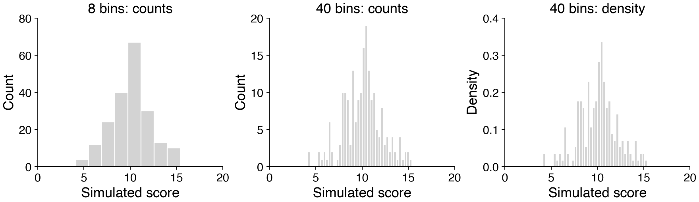
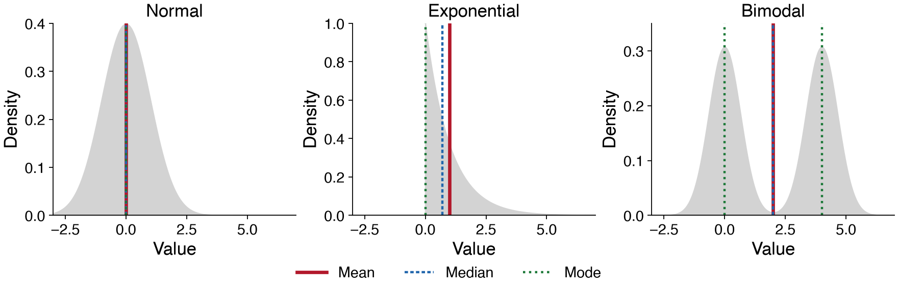
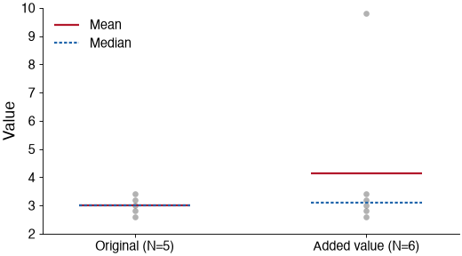
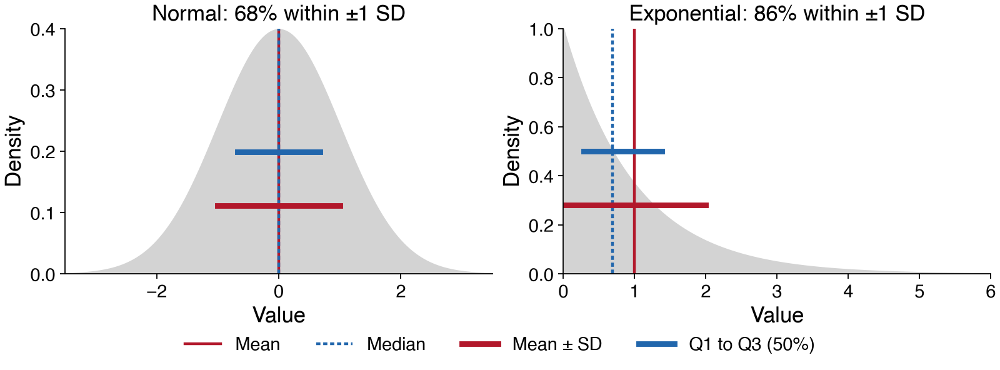
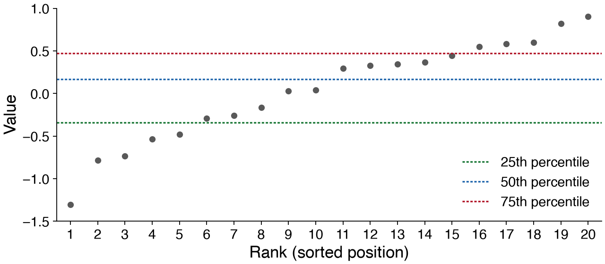
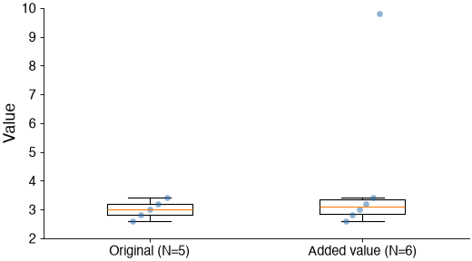
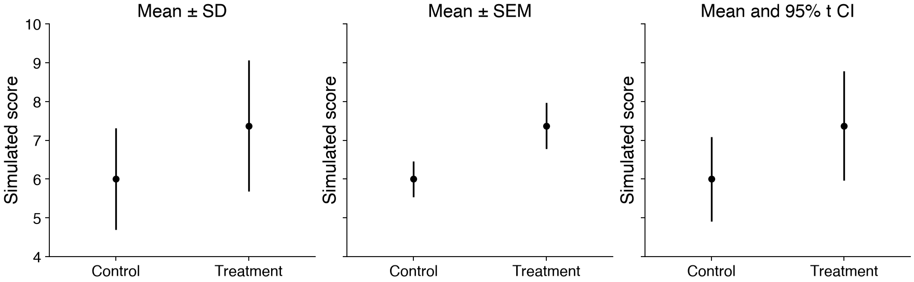

Descriptive statistics¶
Measurements vary. Descriptive statistics help us summarize where a distribution is centered and how widely its values are spread. The mean and standard deviation fully specify a normal distribution, but they cannot describe every distribution’s shape. We will look at the data first, then choose useful summaries.
import numpy as np
from scipy import stats
First, look at the distribution¶
A histogram counts observations in bins. Changing the bins changes the picture, even when the observations stay the same.
With density=True, the total area of the bars is 1: density × bin width gives the fraction in a bin. Height alone is not probability.

Discuss: what do the wide bins hide? What changes between the middle and right panels?
Mini exercise: Histograms¶
Visualize the sample distribution below with 8 and 40 bins. Plot the density. Label both axes.
rng = np.random.default_rng(715)
x = rng.normal(loc=10, scale=2, size=200)
# Your solution here: import matplotlib.pyplot as plt and compare the histograms.
Measures of central tendency: Mean, median, mode¶
Mean: the average, \(\bar{x}=\frac{1}{N}\sum_{i=1}^{N}x_i\).
Median: the middle value after sorting; for an even number of observations, average the two middle values.
Mode: the most frequent discrete value, or a peak of a continuous probability density. There can be more than one mode.
For a normal population, mean, median, and mode coincide. For a skewed distribution they can differ substantially. A finite sample only estimates these population features.

Discuss: why is the exponential mean greater than its median? Is the mean a typical observation in the bimodal example?
For continuous measurements, a histogram’s tallest bin gives only a bin-dependent estimate of the mode.
Calling stats.mode on mostly unique continuous values does not locate a useful density peak.
scores = np.array([4, 5, 5, 6, 6, 7, 7, 8])
print('Mean:', np.mean(scores))
print('Median:', np.median(scores))
print('Modes:', 5, 6, 7) # Each of these discrete values occurs twice.
Mean: 6.0
Median: 6.0
Modes: 5 6 7
What does one extreme value change?¶

The mean uses every value’s magnitude, so a large observation can pull it away from the main cluster. The median depends on order and is often less sensitive to an extreme observation.
Here, adding one high value to just five observations moves the mean from 3.00 to 4.13, while the median changes only from 3.00 to 3.10.
Discuss: would you remove the added value? A surprising measurement is a reason to investigate, not automatically a reason to delete it.
Measures of dispersion: Variance, standard deviation, and IQR¶
Sample variance: \(s^2=\frac{1}{N-1}\sum_{i=1}^{N}(x_i-\bar{x})^2\).
Sample standard deviation: \(s=\sqrt{s^2}\), in the same units as the observations.
Interquartile range: \(\mathrm{IQR}=Q_3-Q_1\), the width of the central 50% of the distribution.
For independent observations from the same population, dividing by \(N-1\) makes the sample variance an unbiased estimator of population variance.
In NumPy, specify ddof=1; the default is division by \(N\).

For a normal population, about 68% of values fall within one SD of the mean and about 95% within two SDs. Those percentages do not generally hold for skewed data. SD is still defined for such data, but median and IQR may summarize them more usefully.
print('Sample variance:', np.var(scores, ddof=1))
print('Sample SD:', np.std(scores, ddof=1))
q1, q3 = np.percentile(scores, [25, 75])
print('Q1, Q3:', q1, q3)
print('IQR:', q3 - q1)
Sample variance: 1.7142857142857142
Sample SD: 1.3093073414159542
Q1, Q3: 5.0 7.0
IQR: 2.0
Mini exercise: An asymmetric distribution¶
Visualize the density of
skewedwith a histogram.Calculate its mean and median, and mark them with vertical lines (
plt.axvline).Why is the mean greater than the median? Calculate the SD and IQR as well.
Use the full sample for the calculations, even if you later zoom in on the plot.
skewed = np.random.default_rng(1).weibull(1.4, size=10_000)
# Your solution here.
Percentiles¶
Percentiles describe positions in the ordered data. The median is the 50th percentile; \(Q_1\) and \(Q_3\) are the 25th and 75th percentiles. The 90th percentile is a value at or below which 90% of observations lie.

Discuss: locate the 10th and 90th percentiles.
Mini exercise: Compute the 10th and 90th percentiles of the samples in y using the function np.percentile. Figure out how the function works.
y = np.random.default_rng(1).normal(size=20)
y.sort()
print('Sorted observations:', np.round(y, 2))
Sorted observations: [-1.3 -0.78 -0.74 -0.54 -0.48 -0.29 -0.26 -0.16 0.03 0.04 0.29 0.33
0.35 0.36 0.45 0.55 0.58 0.6 0.82 0.91]
Boxplots summarize quartiles¶
The line inside the box is the median. The box extends from \(Q_1\) to \(Q_3\). By default, whiskers reach the most extreme observed values within 1.5 IQR of the box; observations beyond are shown separately.

Discuss: what changes when the extreme value is added? What information would be hidden without the individual points?
Standard deviation versus standard error of the mean¶
SD describes the spread of individual observations. SEM estimates how much the sample mean would vary across repeated independent samples:
Discuss: How SD and SEM change with the number of samples N?

Always label what error bars represent. A 95% confidence interval for a mean uses a multiplier; it is not mean ± SEM. For independent normal observations, a t-based interval is \(\bar{x}\pm t_{0.975,N-1}\,\mathrm{SEM}\). Across repeated samples, 95% of intervals constructed this way would contain the fixed population mean under that model.
sd = np.std(scores, ddof=1)
sem = sd / np.sqrt(len(scores))
print('SD:', sd, 'SEM:', sem)
SD: 1.3093073414159542 SEM: 0.46291004988627565